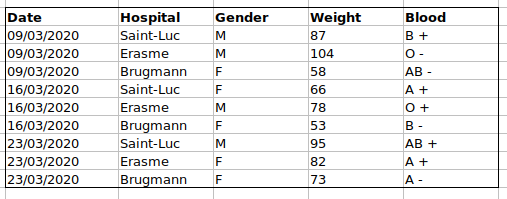
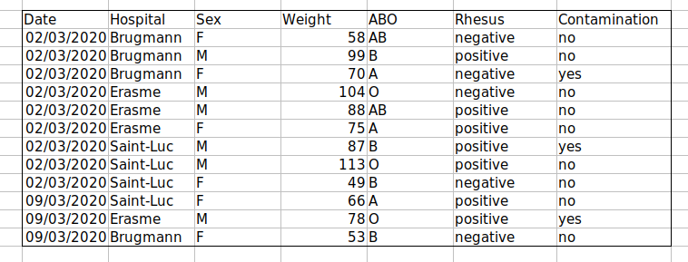

Chapter 1 Data organisation with Spreadsheets
Learning Objectives
- Learn about spreadsheets, their strengths and weaknesses
- How do we format data in spreadsheets for effective data use?
- Learn about common spreadsheet errors and how to correct them.
- Organise your data according to tidy data principles.
- Learn about text-based spreadsheet formats such as the comma-separated (CSV) or tab-separated formats.
1.1 Spreadsheet programs
Question
- What are basic principles for using spreadsheets for good data organisation?
Objective
- Describe best practices for organising data so computers can make the best use of data sets.
Keypoint
- Good data organisation is the foundation of any research project.
Good data organisation is the foundation of your research project. Most researchers have data or do data entry in spreadsheets. Spreadsheet programs are very useful graphical interfaces for designing data tables and handling very basic data quality control functions. See also Broman and Woo (2018Broman, Karl W., and Kara H. Woo. 2018. “Data Organization in Spreadsheets.” The American Statistician 72 (1): 2–10. https://doi.org/10.1080/00031305.2017.1375989.) and Hertz and McNeill (2024Hertz, Marla I, and Ashley S McNeill. 2024. “Eleven Quick Tips for Properly Handling Tabular Data.” PLoS Comput. Biol. 20 (11): e1012604.).
Spreadsheet outline
Spreadsheets are good for data entry. Therefore we have a lot of data in spreadsheets. Much of your time as a researcher will be spent in this ‘data wrangling’ stage. It’s not the most fun, but it’s necessary. We’ll teach you how to think about data organisation and some practices for more effective data wrangling.
What this lesson will not teach you
- How to do statistics in a spreadsheet
- How to do plotting in a spreadsheet
- How to write code in spreadsheet programs
If you’re looking to do this, a good reference is Head First Excel, published by O’Reilly.
Why aren’t we teaching data analysis in spreadsheets
Data analysis in spreadsheets usually requires a lot of manual work. If you want to change a parameter or run an analysis with a new dataset, you usually have to redo everything by hand. (We do know that you can create macros, but see the next point.)
It is also difficult to track or reproduce statistical or plotting analyses done in spreadsheet programs when you want to go back to your work or someone asks for details of your analysis.
Many spreadsheet programs are available. Since most participants utilise Excel as their primary spreadsheet program, this lesson will make use of Excel examples. A free spreadsheet program that can also be used is LibreOffice. Commands may differ a bit between programs, but the general idea is the same.
Spreadsheet programs encompass a lot of the things we need to be able to do as researchers. We can use them for:
- Data entry
- Organising data
- Subsetting and sorting data
- Statistics
- Plotting
Spreadsheet programs use tables to represent and display data. Data formatted as tables is also the main theme of this chapter, and we will see how to organise data into tables in a standardised way to ensure efficient downstream analysis.
► Question
Discuss the following points with your neighbour
- How many people have used spreadsheets, in their research, courses, or at home?
- What kind of operations do you do in spreadsheets?
- Which ones do you think spreadsheets are good for?
- How many people have accidentally done something that made them frustrated or sad?
Problems with Spreadsheets
Spreadsheets are good for data entry, but in reality we tend to use spreadsheet programs for much more than data entry. We use them to create data tables for publications, to generate summary statistics, and make figures.
Generating tables for publications in a spreadsheet is not optimal - often, when formatting a data table for publication, we’re reporting key summary statistics in a way that is not really meant to be read as data, and often involves special formatting (merging cells, creating borders, making it pretty). We advise you to do this sort of operation within your document editing software.
The latter two applications, generating statistics and figures, should be used with caution: because of the graphical, drag and drop nature of spreadsheet programs, it can be very difficult, if not impossible, to replicate your steps (much less retrace anyone else’s), particularly if your stats or figures require you to do more complex calculations. Furthermore, in doing calculations in a spreadsheet, it’s easy to accidentally apply a slightly different formula to multiple adjacent cells. When using a command-line based statistics program like R or SAS, it’s practically impossible to apply a calculation to one observation in your dataset but not another unless you’re doing it on purpose.
Using Spreadsheets for Data Entry and Cleaning
However, there are circumstances where you might want to use a spreadsheet program to produce “quick and dirty” calculations or figures, and data cleaning will help you use some of these features. Data cleaning also puts your data in a better format prior to importation into a statistical analysis program. We will show you how to use some features of spreadsheet programs to check your data quality along the way and produce preliminary summary statistics.
In this lesson, we will assume that you are most likely using Excel as your primary spreadsheet program - there are others (gnumeric, Calc from OpenOffice), and their functionality is similar, but Excel seems to be the program most used by biologists and biomedical researchers.
In this lesson we’re going to talk about:
- Formatting data tables in spreadsheets
- Formatting problems
- Dates as data
- Quality control
- Exporting data
1.2 Formatting data tables in spreadsheets
Questions
- How do we format data in spreadsheets for effective data use?
Objectives
Describe best practices for data entry and formatting in spreadsheets.
Apply best practices to arrange variables and observations in a spreadsheet.
Keypoints
Never modify your raw data. Always make a copy before making any changes.
Keep track of all of the steps you take to clean your data in a plain text file.
Organise your data according to tidy data principles.
The most common mistake made is treating spreadsheet programs like lab notebooks, that is, relying on context, notes in the margin, spatial layout of data and fields to convey information. As humans, we can (usually) interpret these things, but computers don’t view information the same way, and unless we explain to the computer what every single thing means (and that can be hard!), it will not be able to see how our data fits together.
Using the power of computers, we can manage and analyse data in much more effective and faster ways, but to use that power, we have to set up our data for the computer to be able to understand it (and computers are very literal).
This is why it’s extremely important to set up well-formatted tables from the outset - before you even start entering data from your very first preliminary experiment. Data organisation is the foundation of your research project. It can make it easier or harder to work with your data throughout your analysis, so it’s worth thinking about when you’re doing your data entry or setting up your experiment. You can set things up in different ways in spreadsheets, but some of these choices can limit your ability to work with the data in other programs or have the you-of-6-months-from-now or your collaborator work with the data.
Note: the best layouts/formats (as well as software and interfaces) for data entry and data analysis might be different. It is important to take this into account, and ideally automate the conversion from one to another.
1.2.1 Keeping track of your analyses
When you’re working with spreadsheets, during data clean up or analyses, it’s very easy to end up with a spreadsheet that looks very different from the one you started with. In order to be able to reproduce your analyses or figure out what you did when a reviewer or instructor asks for a different analysis, you should
create a new file with your cleaned or analysed data. Don’t modify the original dataset, or you will never know where you started!
keep track of the steps you took in your clean up or analysis. You should track these steps as you would any step in an experiment. We recommend that you do this in a plain text file stored in the same folder as the data file.
This might be an example of a spreadsheet setup:

Put these principles in to practice today during your exercises.
While versioning is out of scope for this course, you can look at the Carpentries lesson on ‘Git’ to learn how to maintain version control over your data. See also this blog post for a quick tutorial or Perez-Riverol et al. (2016Perez-Riverol, Yasset, Laurent Gatto, Rui Wang, Timo Sachsenberg, Julian Uszkoreit, Felipe da Veiga Leprevost, Christian Fufezan, et al. 2016. “Ten Simple Rules for Taking Advantage of Git and GitHub.” PLOS Computational Biology 12 (7): 1–11. https://doi.org/10.1371/journal.pcbi.1004947.) for a more research-oriented use-case.
1.2.2 Structuring data in spreadsheets
The cardinal rules of using spreadsheet programs for data:
- Put all your variables in columns - the thing you’re measuring, like ‘weight’ or ‘temperature’.
- Put each observation in its own row.
- Don’t combine multiple pieces of information in one cell. Sometimes it just seems like one thing, but think if that’s the only way you’ll want to be able to use or sort that data.
- Leave the raw data raw - don’t change it!
- Export the cleaned data to a text-based format like CSV (comma-separated values) format. This ensures that anyone can use the data, and is required by most data repositories.
For instance, we have data from patient that visited several hospitals from Brussels, Belgium. They recorded the date the visit, the hospital, the patients gender, weight and blood group.
If they were to keep track of the data like this:

the problem is that the ABO and rhesus groups are in the same Blood
type column. So, if they wanted to look at all observations of the A
group or look at weight distributions by ABO group, it would be tricky
to do this using this data setup. If instead we put the ABO and rhesus
groups in different columns, you can see that it would be much easier.

An important rule when setting up a datasheet, is that columns are used for variables and rows are used for observations:
- columns are variables
- rows are observations
- cells are individual values
► Question
We’re going to take a messy data and describe how we would clean it up.
Download a messy data by clicking here.
Open up the data in a spreadsheet program.
You can see that there are two tabs. The data contains various clinical variables recorded in various hospitals in Brussels during the first and second COVID-19 waves in 2020. As you can see, the data have been recorded differently during the march and November waves. Now you’re the person in charge of this project and you want to be able to start analysing the data.
With the person next to you, identify what is wrong with this spreadsheet. Also discuss the steps you would need to take to clean up first and second wave tabs, and to put them all together in one spreadsheet.
Important: Do not forget our first piece of advice: to create a new file (or tab) for the cleaned data, never modify your original (raw) data.
After you go through this exercise, we’ll discuss as a group what was wrong with this data and how you would fix it.
► Question
Once you have tidied up the data, compare the tidy and messy versions of the data, and reflect/discuss with your neighbour to how easy/difficult it would be to answer the following questions.
- How many men and women took part in the study?
- How many A, AB, and B types have been tested?
- As above, but disregarding the contaminated samples?
- How many Rhesus + and - have been tested?
- How many universal donors (0-) have been tested?
- What is the average weight of AB men?
- How many samples have been tested in the different hospitals?
An excellent reference, in particular with regard to R scripting is the Tidy Data paper (Wickham (2014bWickham, Hadley. 2014b. “Tidy Data.” Journal of Statistical Software, Articles 59 (10): 1–23. https://doi.org/10.18637/jss.v059.i10.)).
1.3 Common Spreadsheet Errors
Questions
- What are some common challenges with formatting data in spreadsheets and how can we avoid them?
Objectives
- Recognise and resolve common spreadsheet formatting problems.
Keypoints
- Avoid using multiple tables within one spreadsheet.
- Avoid spreading data across multiple tabs.
- Record zeros as zeros.
- Use an appropriate null value to record missing data.
- Don’t use formatting to convey information or to make your spreadsheet look pretty.
- Place comments in a separate column.
- Record units in column headers.
- Include only one piece of information in a cell.
- Avoid spaces, numbers and special characters in column headers.
- Avoid special characters in your data.
- Record metadata in a separate plain text file.
There are a few potential errors to be on the lookout for in your own data as well as data from collaborators or the Internet. If you are aware of the errors and the possible negative effect on downstream data analysis and result interpretation, it might motivate yourself and your project members to try and avoid them. Making small changes to the way you format your data in spreadsheets, can have a great impact on efficiency and reliability when it comes to data cleaning and analysis.
- Using multiple tables
- Using multiple tabs
- Not filling in zeros
- Using problematic null values
- Using formatting to convey information
- Using formatting to make the data sheet look pretty
- Placing comments or units in cells
- Entering more than one piece of information in a cell
- Using problematic field names
- Using special characters in data
- Inclusion of metadata in data table
1.3.1 Using multiple tables
A common strategy is creating multiple data tables within one spreadsheet. This confuses the computer, so don’t do this! When you create multiple tables within one spreadsheet, you’re drawing false associations between things for the computer, which sees each row as an observation. You’re also potentially using the same field name in multiple places, which will make it harder to clean your data up into a usable form. The example below depicts the problem:

In the example above, the computer will see (for example) row 4 and assume that all columns A-AF refer to the same sample. This row actually represents four distinct samples (sample 1 for each of four different collection dates - May 29th, June 12th, June 19th, and June 26th), as well as some calculated summary statistics (an average (avr) and standard error of measurement (SEM)) for two of those samples. Other rows are similarly problematic.
1.3.2 Using multiple tabs
But what about workbook tabs? That seems like an easy way to organise data, right? Well, yes and no. When you create extra tabs, you fail to allow the computer to see connections in the data that are there (you have to introduce spreadsheet application-specific functions or scripting to ensure this connection). Say, for instance, you make a separate tab for each day you take a measurement.
This isn’t good practice for two reasons:
you are more likely to accidentally add inconsistencies to your data if each time you take a measurement, you start recording data in a new tab, and
even if you manage to prevent all inconsistencies from creeping in, you will add an extra step for yourself before you analyse the data because you will have to combine these data into a single datatable. You will have to explicitly tell the computer how to combine tabs - and if the tabs are inconsistently formatted, you might even have to do it manually.
The next time you’re entering data, and you go to create another tab or table, ask yourself if you could avoid adding this tab by adding another column to your original spreadsheet. We used multiple tabs in our example of a messy data file, but now you’ve seen how you can reorganise your data to consolidate across tabs.
Your data sheet might get very long over the course of the experiment. This makes it harder to enter data if you can’t see your headers at the top of the spreadsheet. But don’t repeat your header row. These can easily get mixed into the data, leading to problems down the road. Instead you can freeze the column headers so that they remain visible even when you have a spreadsheet with many rows.
1.3.3 Not filling in zeros
It might be that when you’re measuring something, it’s usually a zero, say the number of times a rabbit is observed in the survey. Why bother writing in the number zero in that column, when it’s mostly zeros?
However, there’s a difference between a zero and a blank cell in a spreadsheet. To the computer, a zero is actually data. You measured or counted it. A blank cell means that it wasn’t measured and the computer will interpret it as an unknown value (otherwise known as a null value).
The spreadsheets or statistical programs will likely mis-interpret blank cells that you intend to be zeros. By not entering the value of your observation, you are telling your computer to represent that data as unknown or missing (null). This can cause problems with subsequent calculations or analyses. For example, the average of a set of numbers which includes a single null value is always null (because the computer can’t guess the value of the missing observations). Because of this, it’s very important to record zeros as zeros and truly missing data as nulls.
1.3.4 Using problematic null values
Example: using -999 or other numerical values (or zero) to represent missing data.
Solutions:
There are a few reasons why null values get represented differently within a dataset. Sometimes confusing null values are automatically recorded from the measuring device. If that’s the case, there’s not much you can do, but it can be addressed in data cleaning with a tool like OpenRefine before analysis. Other times different null values are used to convey different reasons why the data isn’t there. This is important information to capture, but is in effect using one column to capture two pieces of information. Like for using formatting to convey information((#formatting) it would be good here to create a new column like ‘data_missing’ and use that column to capture the different reasons.
Whatever the reason, it’s a problem if unknown or missing data is recorded as -999, 999, or 0.
Many statistical programs will not recognise that these are intended to represent missing (null) values. How these values are interpreted will depend on the software you use to analyse your data. It is essential to use a clearly defined and consistent null indicator.
Blanks (most applications) and NA (for R) are good choices. White et al. (2013White, Ethan P., Elita Baldridge, Zachary T. Brym, Kenneth J. Locey, Daniel J. McGlinn, and Sarah R. Supp. 2013. “Nine Simple Ways to Make It Easier to (Re)use Your Data.” PeerJ PrePrints 1 (July): e7v2. https://doi.org/10.7287/peerj.preprints.7v2.) explain good choices for indicating null values for different software applications in their article:

1.3.5 Using formatting to convey information
Example: highlighting cells, rows or columns that should be excluded from an analysis, leaving blank rows to indicate separations in data.

Solution: create a new field to encode which data should be excluded.

1.3.6 Using formatting to make the data sheet look pretty
Example: merging cells.
Solution: If you’re not careful, formatting a worksheet to be more aesthetically pleasing can compromise your computer’s ability to see associations in the data. Merged cells will make your data unreadable by statistics software. Consider restructuring your data in such a way that you will not need to merge cells to organise your data.
1.3.7 Placing comments or units in cells
Most analysis software can’t see Excel or LibreOffice comments, and would be confused by comments placed within your data cells. As described above for formatting, create another field if you need to add notes to cells. Similarly, don’t include units in cells: ideally, all the measurements you place in one column should be in the same unit, but if for some reason they aren’t, create another field and specify the units the cell is in.
1.3.8 Entering more than one piece of information in a cell
Example: Recording ABO and Rhesus groups in one cell, such as A+, B+, A-, …
Solution: Don’t include more than one piece of information in a cell. This will limit the ways in which you can analyse your data. If you need both these measurements, design your data sheet to include this information. For example, include one column the ABO group and one for the Rhesus group.
1.3.9 Using problematic field names
Choose descriptive field names, but be careful not to include spaces, numbers, or special characters of any kind. Spaces can be misinterpreted by parsers that use whitespace as delimiters and some programs don’t like field names that are text strings that start with numbers.
Underscores (_) are a good alternative to spaces. Consider writing
names in camel case (like this: ExampleFileName) to improve
readability. Remember that abbreviations that make sense at the moment
may not be so obvious in 6 months, but don’t overdo it with names that
are excessively long. Including the units in the field names avoids
confusion and enables others to readily interpret your fields.
Examples
| Good Name | Good Alternative | Avoid |
|---|---|---|
| Max_temp_C | MaxTemp | Maximum Temp (°C) |
| Precipitation_mm | Precipitation | precmm |
| Mean_year_growth | MeanYearGrowth | Mean growth/year |
| sex | sex | M/F |
| weight | weight | w. |
| cell_type | CellType | Cell Type |
| Observation_01 | first_observation | 1st Obs |
1.3.10 Using special characters in data
Example: You treat your spreadsheet program as a word processor when writing notes, for example copying data directly from Word or other applications.
Solution: This is a common strategy. For example, when writing longer text in a cell, people often include line breaks, em-dashes, etc in their spreadsheet. Also, when copying data in from applications such as Word, formatting and fancy non-standard characters (such as left- and right-aligned quotation marks) are included. When exporting this data into a coding/statistical environment or into a relational database, dangerous things may occur, such as lines being cut in half and encoding errors being thrown.
General best practice is to avoid adding characters such as newlines, tabs, and vertical tabs. In other words, treat a text cell as if it were a simple web form that can only contain text and spaces.
1.3.11 Inclusion of metadata in data table
Example: You add a legend at the top or bottom of your data table explaining column meaning, units, exceptions, etc.
Solution: Recording data about your data (“metadata”) is essential. You may be on intimate terms with your dataset while you are collecting and analysing it, but the chances that you will still remember that the variable “sglmemgp” means single member of group, for example, or the exact algorithm you used to transform a variable or create a derived one, after a few months, a year, or more are slim.
As well, there are many reasons other people may want to examine or use your data - to understand your findings, to verify your findings, to review your submitted publication, to replicate your results, to design a similar study, or even to archive your data for access and re-use by others. While digital data by definition are machine-readable, understanding their meaning is a job for human beings. The importance of documenting your data during the collection and analysis phase of your research cannot be overestimated, especially if your research is going to be part of the scholarly record.
However, metadata should not be contained in the data file itself. Unlike a table in a paper or a supplemental file, metadata (in the form of legends) should not be included in a data file since this information is not data, and including it can disrupt how computer programs interpret your data file. Rather, metadata should be stored as a separate file in the same directory as your data file, preferably in plain text format with a name that clearly associates it with your data file. Because metadata files are free text format, they also allow you to encode comments, units, information about how null values are encoded, etc. that are important to document but can disrupt the formatting of your data file.
Additionally, file or database level metadata describes how files that make up the dataset relate to each other; what format are they in; and whether they supercede or are superceded by previous files. A folder-level readme.txt file is the classic way of accounting for all the files and folders in a project.
(Text on metadata adapted from the online course Research Data MANTRA by EDINA and Data Library, University of Edinburgh. MANTRA is licensed under a Creative Commons Attribution 4.0 International License.)
1.4 Exporting data
Question
- How can we export data from spreadsheets in a way that is useful for downstream applications?
Objectives
- Store spreadsheet data in universal file formats.
- Export data from a spreadsheet to a CSV file.
Keypoints
Data stored in common spreadsheet formats will often not be read correctly into data analysis software, introducing errors into your data.
Exporting data from spreadsheets to formats like CSV or TSV puts it in a format that can be used consistently by most programs.
Storing the data you’re going to work with for your analyses in Excel
default file format (*.xls or *.xlsx - depending on the Excel
version) isn’t a good idea. Why?
Because it is a proprietary format, and it is possible that in the future, technology won’t exist (or will become sufficiently rare) to make it inconvenient, if not impossible, to open the file.
Other spreadsheet software may not be able to open files saved in a proprietary Excel format.
Different versions of Excel may handle data differently, leading to inconsistencies. Dates is a well-documented example of inconsistencies in data storage.
Finally, more journals and grant agencies are requiring you to deposit your data in a data repository, and most of them don’t accept Excel format. It needs to be in one of the formats discussed below.
The above points also apply to other formats such as open data formats used by LibreOffice / Open Office. These formats are not static and do not get parsed the same way by different software packages.
Storing data in a universal, open, and static format will help deal with this problem. Try tab-delimited (tab separated values or TSV) or comma-delimited (comma separated values or CSV). CSV files are plain text files where the columns are separated by commas, hence ‘comma separated values’ or CSV. The advantage of a CSV file over an Excel/SPSS/etc. file is that we can open and read a CSV file using just about any software, including plain text editors like TextEdit or NotePad. Data in a CSV file can also be easily imported into other formats and environments, such as SQLite and R. We’re not tied to a certain version of a certain expensive program when we work with CSV files, so it’s a good format to work with for maximum portability and endurance. Most spreadsheet programs can save to delimited text formats like CSV easily, although they may give you a warning during the file export.
To save a file you have opened in Excel in CSV format:
- From the top menu select ‘File’ and ‘Save as’.
- In the ‘Format’ field, from the list, select ‘Comma Separated
Values’ (
*.csv). - Double check the file name and the location where you want to save it and hit ‘Save’.
An important note for backwards compatibility: you can open CSV files in Excel!
Figure 1.1: Saving an Excel file to CSV.

A note on R and xls: There are R packages that can read xls
files (as well as Google spreadsheets). It is even possible to access
different worksheets in the xls documents.
But
- some of these only work on Windows
- this equates to replacing a (simple but manual) export to
csvwith additional complexity/dependencies in the data analysis R code - data formatting best practice still apply
- Is there really a good reason why
csv(or similar) is not adequate?
Caveats on commas
In some datasets, the data values themselves may include commas (,). In that case, the software which you use (including Excel) will most likely incorrectly display the data in columns. This is because the commas which are a part of the data values will be interpreted as delimiters.
For example, our data might look like this:
species_id,genus,species,taxa
AB,Amphispiza,bilineata,Bird
AH,Ammospermophilus,harrisi,Rodent, not censused
AS,Ammodramus,savannarum,Bird
BA,Baiomys,taylori,RodentIn the record AH,Ammospermophilus,harrisi,Rodent, not censused the
value for taxa includes a comma (Rodent, not censused). If we try
to read the above into Excel (or other spreadsheet program), we will
get something like this:
Figure 1.2: The risks of having commas inside comma-separated data.

The value for taxa was split into two columns (instead of being put
in one column D). This can propagate to a number of further
errors. For example, the extra column will be interpreted as a column
with many missing values (and without a proper header). In addition to
that, the value in column D for the record in row 3 (so the one
where the value for ‘taxa’ contained the comma) is now incorrect.
If you want to store your data in csv format and expect that your
data values may contain commas, you can avoid the problem discussed
above by putting the values in quotes (““). Applying this rule, our
data might look like this:
species_id,genus,species,taxa
"AB","Amphispiza","bilineata","Bird"
"AH","Ammospermophilus","harrisi","Rodent, not censused"
"AS","Ammodramus","savannarum","Bird"
"BA","Baiomys","taylori","Rodent"Now opening this file as a csv in Excel will not lead to an extra
column, because Excel will only use commas that fall outside of
quotation marks as delimiting characters.
Alternatively, if you are working with data that contains commas, you likely will need to use another delimiter when working in a spreadsheet2 This is of course particularly relevant in European countries where the comma is used as a decimal separator. In such cases, the default value separator in a csv file will be the semi-colon (;), or values will be systematically quoted.. In this case, consider using tabs as your delimiter and working with TSV files. TSV files can be exported from spreadsheet programs in the same way as CSV files.
If you are working with an already existing dataset in which the data values are not included in “” but which have commas as both delimiters and parts of data values, you are potentially facing a major problem with data cleaning. If the dataset you’re dealing with contains hundreds or thousands of records, cleaning them up manually (by either removing commas from the data values or putting the values into quotes - ““) is not only going to take hours and hours but may potentially end up with you accidentally introducing many errors.
Cleaning up datasets is one of the major problems in many scientific disciplines. The approach almost always depends on the particular context. However, it is a good practice to clean the data in an automated fashion, for example by writing and running a script. The Python and R lessons will give you the basis for developing skills to build relevant scripts.
1.5 Summary
 Figure 1.3: A typical data analysis workflow.
Figure 1.3: A typical data analysis workflow.
A typical data analysis worflow is illustrated in figure 1.3, where data is repeatedly transformed, visualised, modelled. This iteration is repeated multiple times until the data is understood. In many real-life cases, however, most time is spend in cleaning up and preparing the data, rather than actually analysing and understanding it.
An agile data analysis workflow, with several fast iteration of the transform/visualise/model cycle are only feasible is the data is formatted in a predictable way and one can reason on the data without having to look at it and/or fix it.
1.6 Further reading
1.7 Additional exercises
► Question
Download the supplementary table from Geladaki et al. (2019).
Using the best practice documented above, export the file to a
text-based spreadsheet (csv, tsv, …). If necessary, manually fix
the table, but making sure you keep a copy of the original data and
document your modifications.
► Question
Download this table that presents luminescence read-out of a 96 well plate. Reformat it in a way that makes it amenable to data analysis. Hint: The letters A to H and the numbers 1 to 12 represent respectively the rows and the columns of the plate.
► Question
Imagine the following experiment, and produce a data table, making up values for a dozen of observations. > Rodents, mice and rats, where collected on various days by operators > A and B. Their weight and tail length were measured and assigned to > either a control group (and administered water) or a condition group > (and administered drug X). Exactly one week later, the body > measurements were repeated.
Page built: 2025-06-16 using R version 4.5.0 (2025-04-11)